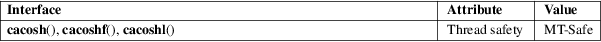

cacosh, cacoshf, cacoshl − complex arc hyperbolic cosine
Math library (libm, −lm)
#include <complex.h>
double
complex cacosh(double complex z);
float complex cacoshf(float complex z);
long double complex cacoshl(long double complex
z);
These functions calculate the complex arc hyperbolic cosine of z. If y = cacosh(z), then z = ccosh(y). The imaginary part of y is chosen in the interval [−pi,pi]. The real part of y is chosen nonnegative.
One has:
cacosh(z) = 2 * clog(csqrt((z + 1) / 2) + csqrt((z − 1) / 2))
For an explanation of the terms used in this section, see attributes(7).

C11, POSIX.1-2008.
C99, POSIX.1-2001. glibc 2.1.
/* Link with "−lm" */
#include
<complex.h>
#include <stdio.h>
#include <stdlib.h>
#include <unistd.h>
int
main(int argc, char *argv[])
{
double complex z, c, f;
if (argc != 3)
{
fprintf(stderr, "Usage: %s <real>
<imag>\n", argv[0]);
exit(EXIT_FAILURE);
}
z = atof(argv[1]) + atof(argv[2]) * I;
c = cacosh(z);
printf("cacosh() = %6.3f %6.3f*i\n", creal(c),
cimag(c));
f = 2 *
clog(csqrt((z + 1)/2) + csqrt((z − 1)/2));
printf("formula = %6.3f %6.3f*i\n", creal(f),
cimag(f));
exit(EXIT_SUCCESS);
}
acosh(3), cabs(3), ccosh(3), cimag(3), complex(7)